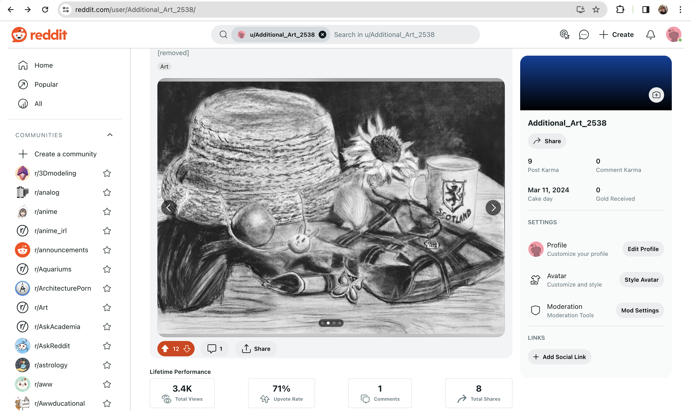
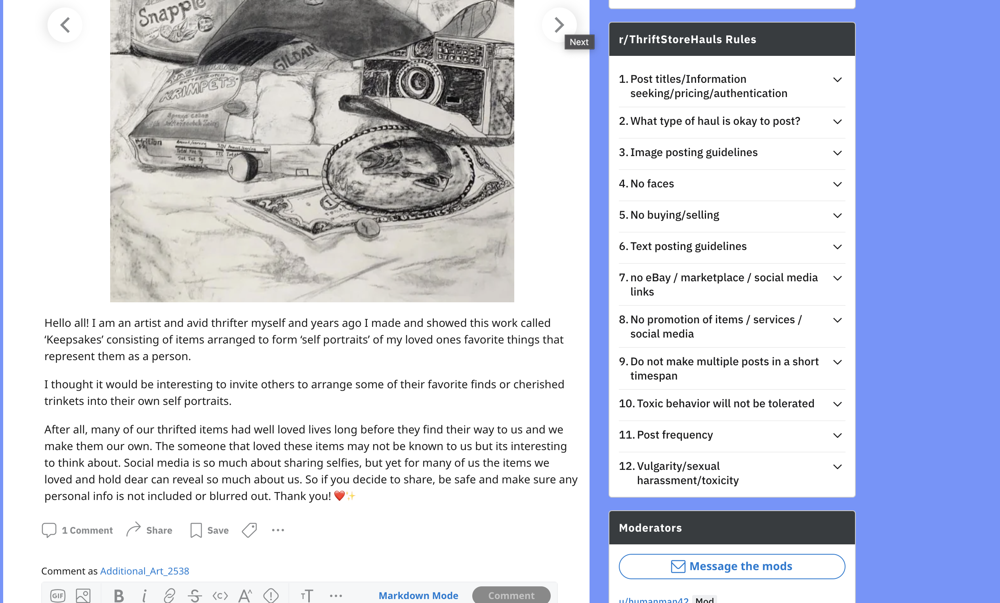

I chose to prompt users of Reddit to partake in posting Self-Portrait of thrifted items that would reflect them or tell a story of who they are through the material items they have collected. This is reminiscent of a group of drawings called ‘Keepsakes’ that I made with cherished belongings of my loved ones and I included photos of these drawings in the post to show an example. I felt that other avid thrifters could connect to this because we love finding interesting and well loved items that have lived long lives before they hit the thrift store shelves. Well, I admit I thought I would gain some posts as a response, but I did not and perhaps the post wasn’t up long enough or I did not find the right audience in the subreddit. I gained some upvotes and a lot of views, but despite not breaking any of the subreddit rules my post was removed. I had specifically chosen Reddit because people often ask the community for participation or opinions and my other option was Facebook which I already had issues getting my posts approved in Facebook groups so to have it taken down by moderators in the subreddit Thrift Store Hauls was interesting. I’m not sure what flagged the removal, but I guess it in part was the nature of the art of intervention as I ran into this issue multiple times. The post did garner 3.4k views and 8 total shares so I think it did well in its reach. I think in moving forward, since the idea does interest me in gaining responses, I would try to revisit and seek out other sites to host this on such as finding a Facebook group that would allow it or potentially another subreddit.
 